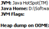
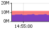
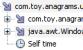
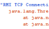
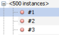
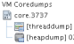
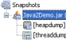

Features
Introduction - monitor, manage & troubleshoot Java applications. Running on 1.6, capable of monitoring 1.4+, transparently using jvmstat, JMX, sa, attach API and other...
 Display local and remote Java applications. VisualVM automatically detects and lists locally and remotely running Java applications (
Display local and remote Java applications. VisualVM automatically detects and lists locally and remotely running Java applications (jstatd is required on remote host).
You can also define applications manually by JMX connection. This way you can easily see what Java applications are running on your system or check if remote J2EE server process is alive.
Display application configuration and runtime environment. For each application VisualVM shows basic runtime information: PID, main class, arguments passed to java process, JVM version, JDK home, JVM flags and arguments and system properties.
{kind=link}
Monitor application memory consumption and runtime behavior. VisualVM monitors application heap and permanent generation memory, number of loaded classes and running threads. You can easily detect suspicious memory consumption and take an action - invoke garbage collection in the application or take a heap dump and browse the contents of application heap.
{kind=link}
 Monitor application threads. All threads running in a Java process are displayed in a timeline.
You can track threads activity and uncover inefficient patterns like blocked Event Dispatch Thread or unused worker threads.
Monitor application threads. All threads running in a Java process are displayed in a timeline.
You can track threads activity and uncover inefficient patterns like blocked Event Dispatch Thread or unused worker threads.
Profile application performance or analyze memory allocation. VisualVM has a built-in application profiler which can visualize where most of the time is being spent or which objects consume most of the memory by just one mouse click without any additional configuration.
{kind=link}
Take and display thread dumps. Taking and displaying a thread dump is as easy as clicking a mouse button. You don't need to deal with commandline at all to determine what's currently happening in the application. Moreover, simultaneous thread dumps of multiple applications can be taken at once to start uncovering distributed deadlocks.
{kind=link}
Take and browse heap dumps. When you need to browse contents of application memory or uncover a memory leak in your application, you'll find the built-in HeapWalker tool really handy.
Natively working with hprof format, it's also capable to browse heap dumps created by JVM on OutOfMemoryException.
{kind=link}
Analyze core dumps. When a Java process crashes, a core dump can be generated by the JVM containing important information about application state at the crash time. VisualVM is able to display application configuration and runtime environment and to extract thread and heap dumps from the core dump.
{kind=link}
Analyze applications offline. VisualVM is able to save application configuration and runtime environment together with all taken thread dumps, heap dumps and profiler snaphots into a single application snapshot which can be later processed offline. This is especially useful for bugreports where users can provide a single file containing all the necessary information to identify runtime environment and application state.
{kind=link}
Plugins
Basic plugins:
Explore application MBeans
Reuse existing JConsole plugins
Haven't found a feature? More plugins at PLUGINS
Feature Matrix
Feature Matrix
System Requirements
Hardware
Operating system
JDK